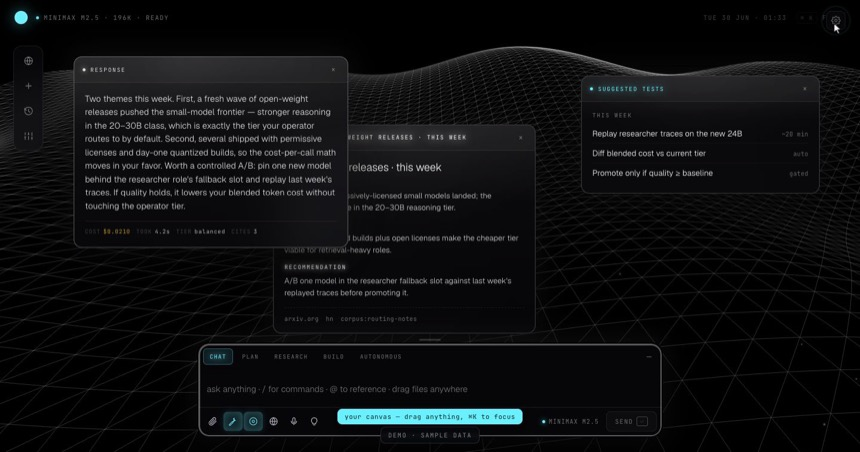
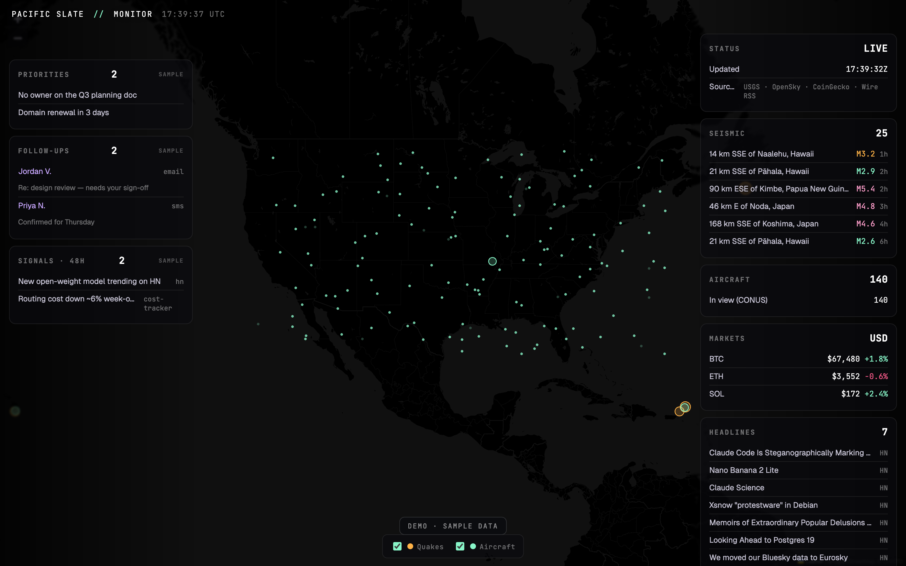

The live demo is a desktop spatial canvas: you drag streaming result cards around a workspace as the agents answer. It needs a pointer and room to move, so it's built for a bigger screen.
Open this page on a desktop for the full interactive version — sample data, no backend. Here's what it looks like:


sample data · no backend